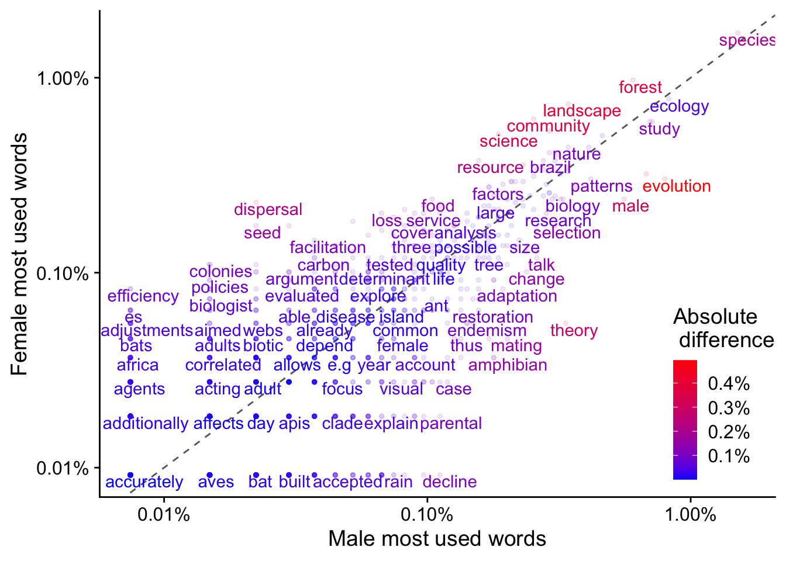

Text analysis: title and abstract of male and female speakers
Melina Leite & Júlia Barreto
30 de Junho de 2024
Last updated: 2024-06-30
Checks: 7 0
Knit directory:
genderBias_EcoEncontros_website/
This reproducible R Markdown analysis was created with workflowr (version 1.7.1). The Checks tab describes the reproducibility checks that were applied when the results were created. The Past versions tab lists the development history.
Great! Since the R Markdown file has been committed to the Git repository, you know the exact version of the code that produced these results.
Great job! The global environment was empty. Objects defined in the global environment can affect the analysis in your R Markdown file in unknown ways. For reproduciblity it’s best to always run the code in an empty environment.
The command set.seed(20240630) was run prior to running
the code in the R Markdown file. Setting a seed ensures that any results
that rely on randomness, e.g. subsampling or permutations, are
reproducible.
Great job! Recording the operating system, R version, and package versions is critical for reproducibility.
Nice! There were no cached chunks for this analysis, so you can be confident that you successfully produced the results during this run.
Great job! Using relative paths to the files within your workflowr project makes it easier to run your code on other machines.
Great! You are using Git for version control. Tracking code development and connecting the code version to the results is critical for reproducibility.
The results in this page were generated with repository version 168ffc9. See the Past versions tab to see a history of the changes made to the R Markdown and HTML files.
Note that you need to be careful to ensure that all relevant files for
the analysis have been committed to Git prior to generating the results
(you can use wflow_publish or
wflow_git_commit). workflowr only checks the R Markdown
file, but you know if there are other scripts or data files that it
depends on. Below is the status of the Git repository when the results
were generated:
Ignored files:
Ignored: .DS_Store
Note that any generated files, e.g. HTML, png, CSS, etc., are not included in this status report because it is ok for generated content to have uncommitted changes.
These are the previous versions of the repository in which changes were
made to the R Markdown (analysis/3_text_genderAnalysis.Rmd)
and HTML (docs/3_text_genderAnalysis.html) files. If you’ve
configured a remote Git repository (see ?wflow_git_remote),
click on the hyperlinks in the table below to view the files as they
were in that past version.
| File | Version | Author | Date | Message |
|---|---|---|---|---|
| Rmd | 168ffc9 | melina-leite | 2024-06-30 | publish the initial version of the website |
| html | 168ffc9 | melina-leite | 2024-06-30 | publish the initial version of the website |
Data
Data description and summary statistics in script
0_data_summary.
load("output/data_title.Rdata")
data <- data_tUsing data from titles and abstracts.
Formating titles
tit <- data %>% dplyr::select(id,gender,position_cat, audience_n,
title_english)
text_tit <- tit %>% unnest_tokens(output=word,
input=title_english)Total of 320 titles.
Number of titles per group
table(tit$gender) %>% kable()| Var1 | Freq |
|---|---|
| F | 140 |
| M | 180 |
table(tit$position_cat,tit$gender) %>% kable()| F | M | |
|---|---|---|
| others | 4 | 1 |
| postdoc | 25 | 32 |
| professor | 24 | 72 |
| student | 86 | 74 |
Formating abstracts
data_abs <- data %>% filter(!is.na(abstract_english))
text_tok <- data %>% dplyr::select(id,gender,position_cat, audience_n,
abstract_english) %>%
unnest_tokens(output=word,input=abstract_english)Total of 234 abstracts.
Number of abstracts per group
table(data_abs$gender) %>% kable()| Var1 | Freq |
|---|---|
| F | 99 |
| M | 135 |
table(data_abs$position_cat,data_abs$gender)%>% kable()| F | M | |
|---|---|---|
| others | 4 | 1 |
| postdoc | 21 | 21 |
| professor | 20 | 57 |
| student | 53 | 56 |
Tidytext
texts <- bind_rows(text_tit, text_tok)
stop_w <- tibble(word = stopwords("en"))
# remove stopwords
text <- texts %>%
anti_join(stop_w, by="word") %>% arrange(word)
# remove other non-words (numbersm characters) and stopwords
text <- text %>% dplyr::slice(-c(1:281)) %>% # number and some symbols
filter(nchar(word)!=1) %>% # letters alone
filter(!word %in% c("mpas", "δ13c", "β", "can", "aff", "agb", "al",
"and","são"))
# solving some simple plurals
plural <- c("actions","advances", "adaptations", "amphibians", "animals",
"ants","anurans",
"applications","approaches", "bees","builds", "birds",
"cerrados","challenges", "biologists", "captures",
"continents","crops",
"decisions","declines","determines","determinants", "defenses",
"dynamics", "dunnocks",
"economics", "ecosystems","environments", "experiences",
"forests", "fruits", "fathers",
"genetics","gifts","gradients","guides","impacts", "islands",
"increases","interactions", "jobs", "lives", "insects",
"landscapes","males","mammals", "mangroves","models","movements",
"mutualisms","networks","neotropics",
"opilions","phenotypes","plants","projects","paths", "perspectives",
"purposes", "populations","promotes","relationships", "relations",
"resources","responses","roads","services","skulls","snakes","seeds",
"soils", "spaces", "spiders","stages", "trees", "variations",
"threats")
text$word[text$word %in% plural] <-
substr(text$word[text$word %in% plural],
1,nchar(text$word[text$word %in% plural])-1)Grouping similar words:
lemma <- rbind(c("adaptive", "adaptation"),
c("advancement", "advance"),
c("agricultural", "agriculture"),
c("agro", "agriculture" ),
c("amazonia","amazon" ),
c("amazonian","amazon" ),
c("andean","andes"),
c("apply","application"),
c("applying","application"),
c("approaches", "approach"),
c("apidae","apis"),
c("arachnida","arachnid"),
c("argue","argument"),
c("basal", "basis"),
c("behavioral","behavior"),
c("behavioural","behavior"),
c("bignonieae", "bignoniaceae"),
c("biological", "biology"),
c("brazilian","brazil"),
c("building","build"),
c("butterflies", "butterfly"),
c("changing", "change"),
c("cnidarian", "cnidaria"),
c("coastal","coast"),
c("colour", "color"),
c("colors", "color"),
c("communities","community" ),
c("competitive", "competition"),
c("complexity", "complex"),
c("convergences", "convergence"),
c("convergent", "convergence"),
c("croplands","crop"),
c( "cultural", "culture"),
c("darwin's", "darwin"),
c("darwinian", "darwin"),
c("defensive", "defense"),
c("dependent","dependence"),
c("detecting","detection"),
c("determine", "determinant"),
c("developmental", "development"),
c("dispersers","dispersal"),
c("disturbed", "disturbance"),
c("diversification", "diversity"),
c("dragonflies", "dragonfly"),
c("drier", "drought"),
c("ecological", "ecology"),
c("ecologists", "ecology"),
c("endemic", "endemism"),
c("effectiveness", "efficiency"),
c("environmental", "environment"),
c("evolutionary", "evolution"),
c("expanding", "expansion"),
c("extinct", "extinction"),
c("facilitate", "facilitation"),
c("fisheries", "fishery"),
c("floral", "flora"),
c("floristic", "flora"),
c("forested", "forest"),
c("functional", "function"),
c("functionally", "function"),
c("functioning", "function"),
c("geographical", "geographic"),
c("heterogeneties", "heterogeneity"),
c("heterogeneous", "heterogeneity"),
c("histories", "history"),
c("integrated", "integration"),
c("intregating", "integration"),
c("integrative", "integration"),
c("invasive", "invasion"),
c("isotopic", "isotope"),
c("linking", "link"),
c("living", "live"),
c("mammalia", "mammal"),
c("managed", "manage"),
c("managers", "manage"),
c("mathematical", "mathematics"),
c("mates", "mating"),
c("mediated", "mediate"),
c("mechanistic", "mechanism"),
c("matrices", "matrix"),
c("migratory", "migration"),
c("mimicking", "mimicry"),
c("modeling", "model"),
c("mutualistic", "mutualism"),
c("natural", "nature"),
c("neotropical", "neotropic"),
c("northeastern", "northeast"),
c("occuring", "occur"),
c("onça", "onca"),
c("opiliones", "opilion"),
c("parasite", "parasitism"),
c("parent", "parenting"),
c("phylogenies", "phylogeny"),
c("phylogenetic", "phylogeny"),
c("phylogenomic", "phylogeny"),
c("pollinators", "pollination"),
c("protected", "protect"),
c("protective", "protect"),
c("rainfall", "rain"),
c("reconstructing", "reconstruction"),
c("regulatory", "regulation"),
c("regulates", "regulation"),
c("relation", "relationship"),
c("reproductive", "reproduction"),
c("restored", "restoration"),
c("robustness", "robust"),
c("scientific", "science"),
c("scientist", "science"),
c("sexy", "sexual"),
c("simulated", "simulation"),
c("societies", "society"),
c("social", "society"),
c("socio", "society"),
c("space", "spatial"),
c("spacio", "spatial"),
c("stabilize", "stability"),
c("stable", "stability"),
c("stories", "story"),
c("strategic", "strategy"),
c("strategies", "strategy"),
c("structured", "structure"),
c("structuring", "structure"),
c("studies", "study"),
c("studing", "study"),
c("sustainable", "sustainability"),
c("theories", "theory"),
c("theoretical", "theory"),
c("threatened", "threat"),
c("tropical", "tropic"),
c("vision", "visual")
)
lemma <- as.data.frame(lemma)
for (i in 1:dim(lemma)[1]){
text$word[text$word == lemma[i,1]] <- lemma[i,2]
}WORDS - all data
Number of words per gender and academic level
table(text$gender) %>% kable()| Var1 | Freq |
|---|---|
| F | 10905 |
| M | 13429 |
table(text$position_cat ,text$gender)%>% kable()| F | M | |
|---|---|---|
| others | 260 | 137 |
| postdoc | 2806 | 2555 |
| professor | 1977 | 5078 |
| student | 5771 | 5648 |
20 more common workds
text %>%
count(word, sort = TRUE) %>%
top_n(20,n)%>%
kable()| word | n |
|---|---|
| species | 388 |
| ecology | 196 |
| forest | 187 |
| study | 161 |
| model | 159 |
| evolution | 140 |
| environment | 138 |
| landscape | 126 |
| population | 126 |
| diversity | 117 |
| plant | 103 |
| community | 101 |
| male | 101 |
| different | 97 |
| nature | 94 |
| patterns | 89 |
| areas | 86 |
| interaction | 84 |
| present | 84 |
| animal | 82 |
| use | 82 |
Word cloud
All words
textplot_wordcloud(x=dfm(tokens(text$word)))
| Version | Author | Date |
|---|---|---|
| 168ffc9 | melina-leite | 2024-06-30 |
By gender. Purple female, yellow male
par(mfrow=c(1,2))
textplot_wordcloud(x=dfm(tokens(text$word[text$gender=="F"])),
col="#6D57CF")
par(new=T)
textplot_wordcloud(x=dfm(tokens(text$word[text$gender=="M"])),
col="#FCA532")
| Version | Author | Date |
|---|---|---|
| 168ffc9 | melina-leite | 2024-06-30 |
Word frequencies by gender
props <- text %>%
count(gender, word) %>%
group_by(gender) %>%
mutate(proportion = n / sum(n)) %>%
pivot_wider(names_from = gender, values_from = c(proportion,n)) %>%
mutate(abs.dif.p = abs(proportion_F-proportion_M),
rel.dif.p = pmax(proportion_F, proportion_M)/
pmin(proportion_F, proportion_M)) %>%
arrange(desc(abs.dif.p))
props$label <- NA
props$label[1:20] <- props$word[1:20]
| Version | Author | Date |
|---|---|---|
| 168ffc9 | melina-leite | 2024-06-30 |
Words that are close to the dashed line have similar frequencies in both genders. Words that are far from the line are words that are found more in one set of texts than another.
Legend: absolute differences in the frequency of the word by males and females. Differences above 0.3% are also indicated in text.
Correlation of word frequeency use between gender:
cor.test(props$proportion_F, props$proportion_M)
Pearson's product-moment correlation
data: props$proportion_F and props$proportion_M
t = 70.674, df = 1650, p-value < 2.2e-16
alternative hypothesis: true correlation is not equal to 0
95 percent confidence interval:
0.8544996 0.8784931
sample estimates:
cor
0.866998 Highly correlated -> it means they tend to use the same frequency of main word
20 words with the largest differences in frequency
prop2 <- props %>% filter(!is.na(label)) %>%
arrange(desc(proportion_F), desc(proportion_M)) %>%
mutate(ntot = n_F + n_M) %>%
mutate(word = fct_reorder(word,(ntot),max),
proportion_F = proportion_F*-1) %>%
pivot_longer(2:3,names_to = "gender", values_to ="proportion")
ggplot(prop2, aes(x=proportion, y=word,fill=gender)) +
geom_col()+ ylab("") + xlab("Proportion")+
scale_fill_manual(name="gender", values=c("#6D57CF","#FCA532"),
labels=c("F", "M"))+
geom_vline(xintercept = c(-0.02,-0.01,0,0.01,0.02),
linetype="dotted",
col="darkgray") +
scale_x_continuous(breaks=c(-0.02,-0.01,0,0.01,0.02),
labels = c(0.02,0.01,0,0.01,0.02))
| Version | Author | Date |
|---|---|---|
| 168ffc9 | melina-leite | 2024-06-30 |
TF IDF
The statistic tf-idf is intended to measure how important a word is to a document in a collection (or corpus) of documents, for example, to one novel in a collection of novels or to one website in a collection of websites.
Calculating tf-idf attempts to find the words that are important (i.e., common) in a text, but not too common. Let’s do that now.
text_id <- text %>% count(gender, word) %>%
bind_tf_idf(word, gender, n) %>%
arrange(desc(tf_idf))10 “exclusive” words for each group
text_id$word <- as.factor(text_id$word)
text_id %>%
group_by(gender) %>%
arrange(desc(tf_idf)) %>%
top_n(10, tf_idf) %>%
ggplot(aes(x = tf_idf, y = reorder(word, tf_idf), fill = gender)) +
geom_col(show.legend = FALSE) +
labs(x = NULL, y = "tf-idf") +
facet_wrap(~gender, scales = "free") +
theme_minimal()
| Version | Author | Date |
|---|---|---|
| 168ffc9 | melina-leite | 2024-06-30 |
WORDS - professors only data
textP <- text %>% filter(position_cat == "professor")
table(textP$gender)
F M
1977 5078 par(mfrow=c(1,2))
textplot_wordcloud(x=dfm(tokens(textP$word[textP$gender=="F"])),
col="#6D57CF")
par(new=T)
textplot_wordcloud(x=dfm(tokens(textP$word[textP$gender=="M"])),
col="#FCA532")
| Version | Author | Date |
|---|---|---|
| 168ffc9 | melina-leite | 2024-06-30 |
Mean number of words by abstract
textP %>% count(id,gender) %>%
ggplot(aes(x=gender, y=n)) +
geom_violin() + geom_boxplot(width=0.2)+
ggbeeswarm::geom_quasirandom(size=3, shape=21) 
| Version | Author | Date |
|---|---|---|
| 168ffc9 | melina-leite | 2024-06-30 |
20 most commmon words
textP %>%
count(word, sort = TRUE) %>%
top_n(20,n)%>%
kable()| word | n |
|---|---|
| species | 90 |
| ecology | 71 |
| evolution | 54 |
| population | 50 |
| environment | 47 |
| study | 45 |
| plant | 43 |
| model | 39 |
| diversity | 37 |
| nature | 36 |
| ecosystem | 33 |
| pollination | 32 |
| research | 31 |
| society | 30 |
| biology | 29 |
| science | 29 |
| interaction | 27 |
| amphibian | 25 |
| may | 25 |
| community | 24 |
Words Frequency by gender
propsP <- textP %>%
count(gender, word) %>%
group_by(gender) %>%
mutate(proportion = n / sum(n)) %>%
pivot_wider(names_from = gender, values_from = c(proportion,n)) %>%
mutate(abs.dif.p = abs(proportion_F-proportion_M),
rel.dif.p = pmax(proportion_F, proportion_M)/
pmin(proportion_F, proportion_M)) %>%
arrange(desc(abs.dif.p))
propsP$label <- NA
propsP$label[1:20] <- propsP$word[1:20]ggplot(propsP, aes(x=proportion_M,, y=proportion_F,
color=abs.dif.p)) +
geom_abline(color = "gray40", lty = 2) +
geom_point(size=1, alpha=0.1)+
# geom_jitter(size=2.5, alpha=0.02)+
geom_text(aes(label=word), check_overlap = T,vjust=1,hjust=0.32)+
#geom_text_repel(aes(label=label), size=3.2)+
#xlim(0,1)+ylim(0,0.2)+
scale_x_log10(name="Male most used words", limits=c(0.0003,0.02),
labels = percent_format()) +
scale_y_log10(name="Female most used words",limits=c(0.0003,0.02),
labels = percent_format()) +
scale_color_gradient(name="Absolute \n difference",low = "blue", high = "red",
labels=percent_format()
) +
theme(legend.justification = c(1, -0.1), legend.position = c(1, 0))
| Version | Author | Date |
|---|---|---|
| 168ffc9 | melina-leite | 2024-06-30 |
# geom_smooth(method="lm")
#ggsave("figures/FIG_S4_wordFreq_Prof.jpg", height = 7, width=9)Words that are close to the dashed line in these plots have similar frequencies in both genders. Words that are far from the line are words that are found more in one set of texts than another.
Legend: absolute differences in the frequency of the word by males and females.
Labels for the 20 words with largest differences in frequency.
Correlation of word frequeency use between gender:
cor.test(propsP$proportion_F, propsP$proportion_M)
Pearson's product-moment correlation
data: propsP$proportion_F and propsP$proportion_M
t = 20.205, df = 518, p-value < 2.2e-16
alternative hypothesis: true correlation is not equal to 0
95 percent confidence interval:
0.6128988 0.7093872
sample estimates:
cor
0.6638971 20 words with the largest differences in frequency
propP2 <- propsP %>% filter(!is.na(label)) %>%
arrange(desc(proportion_F), desc(proportion_M)) %>%
mutate(ntot = n_F + n_M) %>%
mutate(word = fct_reorder(word,(ntot),max),
proportion_F = proportion_F*-1) %>%
pivot_longer(2:3,names_to = "gender", values_to ="proportion")
ggplot(propP2, aes(x=proportion, y=word,fill=gender)) +
geom_col()+ ylab("") + xlab("Proportion")+
scale_fill_manual(name="gender", values=c("#6D57CF","#FCA532"),
labels=c("F", "M"))+
geom_vline(xintercept = c(-0.02,-0.01,0,0.01,0.02),
linetype="dotted",
col="darkgray") +
scale_x_continuous(breaks=c(-0.02,-0.01,0,0.01,0.02),
labels = c(0.02,0.01,0,0.01,0.02))
| Version | Author | Date |
|---|---|---|
| 168ffc9 | melina-leite | 2024-06-30 |
TF IDF
text_idP <- textP %>% count(gender, word) %>%
bind_tf_idf(word, gender, n) %>%
arrange(desc(tf_idf))10 “exclusive” words for each group
text_idP$word <- as.factor(text_idP$word)
text_idP %>%
group_by(gender) %>%
arrange(desc(tf_idf)) %>%
top_n(10, tf_idf) %>%
ggplot(aes(x = tf_idf, y = reorder(word, tf_idf), fill = gender)) +
geom_col(show.legend = FALSE) +
labs(x = NULL, y = "tf-idf") +
facet_wrap(~gender, scales = "free") +
theme_minimal()
| Version | Author | Date |
|---|---|---|
| 168ffc9 | melina-leite | 2024-06-30 |
Topic model - all data
LDA - latent Dirichlet allocation method for fiting topic model
It treats each document as a mixture of topics, and each topic as a mixture of words. This allows documents to “overlap” each other in terms of content, rather than being separated into discrete groups, in a way that mirrors typical use of natural lan‐ guage.
Every document is a mixture of topics
Every topic is a mixture of words
matext <- text %>% count(id, gender, word) %>% mutate(id = paste(id, gender, sep="_")) %>%
select(-gender) %>%
cast_dtm(term=word,document=id,value=n)Choosing number of topics: comparing AIC
ap_lda2 <- LDA(matext, k = 2, control = list(seed = 1234))
ap_lda3 <- LDA(matext, k = 3, control = list(seed = 1234))
ap_lda4 <- LDA(matext, k = 4, control = list(seed = 1234))
ap_lda5 <- LDA(matext, k = 5, control = list(seed = 1234))
ap_lda10<- LDA(matext, k = 10, control = list(seed = 1234))
ap_lda20 <- LDA(matext, k = 20, control = list(seed = 1234))
bbmle::AICtab(ap_lda2, ap_lda3, ap_lda4,ap_lda5, ap_lda10,ap_lda20,
base=T) AIC dAIC df
ap_lda2 375926.2 0.0 9877
ap_lda3 378052.8 2126.6 14815
ap_lda4 382295.0 6368.9 19753
ap_lda5 387617.8 11691.7 24691
ap_lda10 419995.2 44069.0 49381
ap_lda20 498167.4 122241.3 98761two-topics model seems the most plausible model
Word-topic probabilities
10 words with the largest probabilities for each group
ap_topics <- tidy(ap_lda2, matrix = "beta")
ap_top_terms <- ap_topics %>%
group_by(topic) %>%
top_n(10, beta) %>%
ungroup() %>%
arrange(topic, -beta)
ap_top_terms %>%
mutate(term = reorder(term, beta)) %>%
ggplot(aes(term, beta, fill = factor(topic))) +
geom_col(show.legend = FALSE) +
facet_wrap(~ topic, scales = "free") + coord_flip()
| Version | Author | Date |
|---|---|---|
| 168ffc9 | melina-leite | 2024-06-30 |
words with the greates difference in Beta between topics
beta_spread <- ap_topics %>%
mutate(topic = paste0("topic", topic)) %>%
spread(topic, beta) %>%
filter(topic1 > .001 | topic2 > .001) %>%
mutate(log_ratio = log2(topic2 / topic1))
beta_spread# A tibble: 254 × 4
term topic1 topic2 log_ratio
<chr> <dbl> <dbl> <dbl>
1 abundance 0.00155 0.000501 -1.63
2 action 0.000531 0.00134 1.34
3 activities 0.000459 0.00116 1.33
4 adaptation 0.000769 0.00222 1.53
5 addition 0.00100 0.00106 0.0791
6 advance 0.0000853 0.00115 3.75
7 affect 0.000752 0.00117 0.638
8 agriculture 0.00106 0.00135 0.355
9 also 0.00283 0.00275 -0.0386
10 amazon 0.000871 0.00130 0.577
# ℹ 244 more rowsbeta_spread %>%
arrange(log_ratio) %>% slice(c(1:5,260:264)) %>%
ggplot(aes(fct_reorder(term,log_ratio,min), log_ratio)) +
geom_col(show.legend = FALSE) + coord_flip() +
ylab("Log2 ration of beta in topic 2/topic 1") + xlab("Word")
| Version | Author | Date |
|---|---|---|
| 168ffc9 | melina-leite | 2024-06-30 |
Document-topic probabilities - classifying the abstracts
and comparing the two groups by gender (if there is a difference in frequency)
ap_documents <- tidy(ap_lda2, matrix = "gamma")
classifi <- ap_documents %>% mutate(gender = substr(document, nchar(document), nchar(document))) %>%
group_by(document,gender) %>%
top_n(1, gamma)
table(classifi$gender, classifi$topic)
1 2
F 76 57
M 93 84classifi %>% tabyl(gender, topic) %>% adorn_percentages() %>%
adorn_pct_formatting(digits = 0) %>%
adorn_ns() %>% kable()| gender | 1 | 2 |
|---|---|---|
| F | 57% (76) | 43% (57) |
| M | 53% (93) | 47% (84) |
classifi %>%
# mutate(title = reorder(title, gamma * topic)) %>%
ggplot(aes(as.character(topic), gamma)) +
geom_boxplot() +
facet_wrap(~ gender)
| Version | Author | Date |
|---|---|---|
| 168ffc9 | melina-leite | 2024-06-30 |
Chi-square test
chisq.test(classifi$gender, classifi$topic)
Pearson's Chi-squared test with Yates' continuity correction
data: classifi$gender and classifi$topic
X-squared = 0.47591, df = 1, p-value = 0.4903Topic model - Professors only
matextP <- textP %>%
count(id, gender, word) %>% mutate(id = paste(id, gender, sep="_")) %>%
select(-gender) %>%
cast_dtm(term=word,document=id,value=n)ap_lda2P <- LDA(matextP, k = 2, control = list(seed = 1234))
ap_lda3P <- LDA(matextP, k = 3, control = list(seed = 1234))
ap_lda4P <- LDA(matextP, k = 4, control = list(seed = 1234))
bbmle::AICtab(ap_lda2P, ap_lda3P, ap_lda4P,base=T) AIC dAIC df
ap_lda2P 107292.8 0.0 4947
ap_lda3P 108945.3 1652.4 7420
ap_lda4P 111571.6 4278.8 9893word-topic probabilities
ap_topicsP <- tidy(ap_lda2P, matrix = "beta")
ap_top_termsP <- ap_topicsP %>%
group_by(topic) %>%
top_n(10, beta) %>%
ungroup() %>%
arrange(topic, -beta)
ap_top_termsP %>%
mutate(term = reorder(term, beta)) %>% ggplot(aes(term, beta, fill = factor(topic))) + geom_col(show.legend = FALSE) +
facet_wrap(~ topic, scales = "free") + coord_flip()
| Version | Author | Date |
|---|---|---|
| 168ffc9 | melina-leite | 2024-06-30 |
words with the greates difference in Beta between topics
beta_spread <- ap_topicsP %>%
mutate(topic = paste0("topic", topic)) %>%
spread(topic, beta) %>%
filter(topic1 > .001 | topic2 > .001) %>%
mutate(log_ratio = log2(topic2 / topic1))
beta_spread# A tibble: 348 × 4
term topic1 topic2 log_ratio
<chr> <dbl> <dbl> <dbl>
1 abundance 0.00132 5.08e-44 -134.
2 accepted 0.00132 1.47e-37 -113.
3 across 0.000791 1.53e- 3 0.953
4 action 0.00153 3.66e- 4 -2.06
5 activities 0.00177 7.01e- 4 -1.34
6 adaptation 0.00161 3.95e- 3 1.30
7 addition 0.00106 9.98e-10 -20.0
8 address 0.000528 1.23e- 3 1.22
9 advance 0.000538 1.52e- 3 1.50
10 affect 0.00201 4.20e- 4 -2.26
# ℹ 338 more rowsbeta_spread %>%
arrange(log_ratio) %>% slice(c(1:5,260:264)) %>%
ggplot(aes(fct_reorder(term,log_ratio,min), log_ratio)) +
geom_col(show.legend = FALSE) + coord_flip() +
ylab("Log2 ration of beta in topic 2/topic 1") + xlab("Word")
| Version | Author | Date |
|---|---|---|
| 168ffc9 | melina-leite | 2024-06-30 |
Document-topic probabilities
ap_documentsP <- tidy(ap_lda2P, matrix = "gamma")
classifiP <- ap_documentsP %>% mutate(gender = substr(document, nchar(document), nchar(document))) %>%
group_by(document,gender) %>%
top_n(1, gamma)
table(classifiP$gender, classifiP$topic)
1 2
F 12 12
M 39 33library(janitor)
classifiP %>% tabyl(gender, topic) %>% adorn_percentages() %>%
adorn_pct_formatting(digits = 0) %>%
adorn_ns() %>% kable()| gender | 1 | 2 |
|---|---|---|
| F | 50% (12) | 50% (12) |
| M | 54% (39) | 46% (33) |
classifiP %>%
# mutate(title = reorder(title, gamma * topic)) %>%
ggplot(aes(as.character(topic), gamma)) +
geom_boxplot() +
geom_violin()+
facet_wrap(~ gender)
| Version | Author | Date |
|---|---|---|
| 168ffc9 | melina-leite | 2024-06-30 |
Chi-square test
chisq.test(classifiP$gender, classifiP$topic)
Pearson's Chi-squared test with Yates' continuity correction
data: classifiP$gender and classifiP$topic
X-squared = 0.013943, df = 1, p-value = 0.906
sessionInfo()R version 4.3.1 (2023-06-16)
Platform: aarch64-apple-darwin20 (64-bit)
Running under: macOS Sonoma 14.5
Matrix products: default
BLAS: /Library/Frameworks/R.framework/Versions/4.3-arm64/Resources/lib/libRblas.0.dylib
LAPACK: /Library/Frameworks/R.framework/Versions/4.3-arm64/Resources/lib/libRlapack.dylib; LAPACK version 3.11.0
locale:
[1] pt_BR.UTF-8/pt_BR.UTF-8/pt_BR.UTF-8/C/pt_BR.UTF-8/pt_BR.UTF-8
time zone: America/Sao_Paulo
tzcode source: internal
attached base packages:
[1] stats graphics grDevices utils datasets methods base
other attached packages:
[1] quanteda.textplots_0.94.4 quanteda_4.0.1 tm_0.7-12
[4] NLP_0.2-1 topicmodels_0.2-16 ggrepel_0.9.5
[7] scales_1.3.0 tidytext_0.4.2 janitor_2.2.0
[10] ggbeeswarm_0.7.2 patchwork_1.2.0 cowplot_1.1.3
[13] lubridate_1.9.3 forcats_1.0.0 stringr_1.5.1
[16] dplyr_1.1.4 purrr_1.0.2 readr_2.1.5
[19] tidyr_1.3.1 tibble_3.2.1 ggplot2_3.5.1
[22] tidyverse_2.0.0 knitr_1.45 workflowr_1.7.1
loaded via a namespace (and not attached):
[1] tidyselect_1.2.1 vipor_0.4.7 farver_2.1.2 fastmap_1.2.0
[5] janeaustenr_1.0.0 promises_1.3.0 digest_0.6.35 timechange_0.3.0
[9] lifecycle_1.0.4 tokenizers_0.3.0 processx_3.8.4 magrittr_2.0.3
[13] compiler_4.3.1 rlang_1.1.4 sass_0.4.9 tools_4.3.1
[17] utf8_1.2.4 yaml_2.3.8 labeling_0.4.3 stopwords_2.3
[21] plyr_1.8.9 xml2_1.3.6 withr_3.0.0 numDeriv_2016.8-1.1
[25] grid_4.3.1 stats4_4.3.1 fansi_1.0.6 git2r_0.33.0
[29] colorspace_2.1-0 MASS_7.3-60.0.1 mvtnorm_1.2-5 bbmle_1.0.25.1
[33] cli_3.6.2 rmarkdown_2.27 generics_0.1.3 rstudioapi_0.16.0
[37] reshape2_1.4.4 httr_1.4.7 tzdb_0.4.0 bdsmatrix_1.3-7
[41] cachem_1.1.0 modeltools_0.2-23 parallel_4.3.1 vctrs_0.6.5
[45] Matrix_1.6-5 jsonlite_1.8.8 slam_0.1-50 callr_3.7.6
[49] hms_1.1.3 beeswarm_0.4.0 jquerylib_0.1.4 glue_1.7.0
[53] ps_1.7.6 stringi_1.8.4 gtable_0.3.5 later_1.3.2
[57] munsell_0.5.1 pillar_1.9.0 htmltools_0.5.8.1 R6_2.5.1
[61] rprojroot_2.0.4 evaluate_0.23 lattice_0.22-6 highr_0.10
[65] SnowballC_0.7.1 snakecase_0.11.1 httpuv_1.6.15 bslib_0.7.0
[69] Rcpp_1.0.12 fastmatch_1.1-4 whisker_0.4.1 xfun_0.42
[73] fs_1.6.4 getPass_0.2-4 pkgconfig_2.0.3